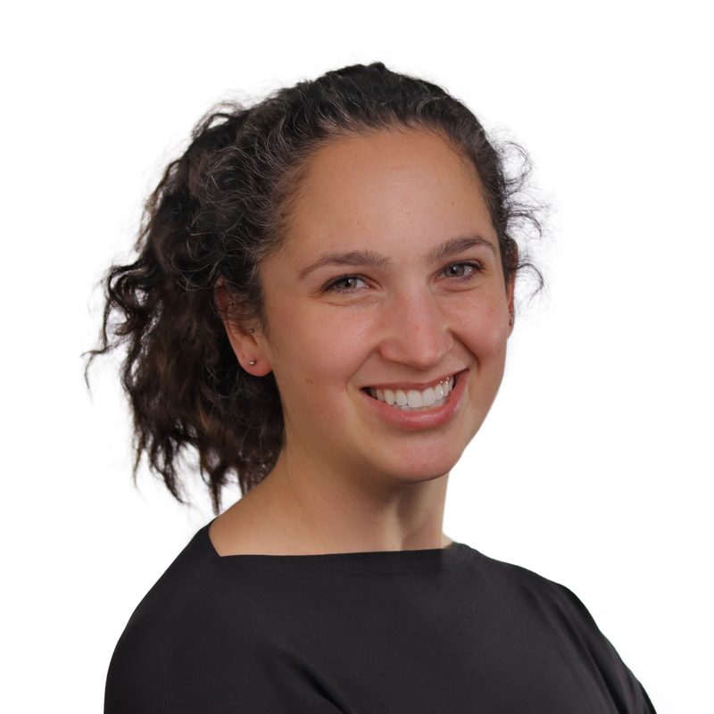

Jannalee Edgar
Jannalee is your person if you want an active approach to your care — especially if you feel like you've tried everything, or you're ready to take your recovery to the next level. She's the owner of Jannalee Physiotherapy, and where she really lights up is treating feet, shoulders, and concussions. Sore feet are genuinely debilitating — you're on them all day — and they're your foundation, so knee or hip pain often traces right back to the foot. (That's the movement detective in her: she looks past where it hurts to find what's actually driving it.) Concussions are close to her heart precisely because they're hard — there's no x-ray or MRI to point at, so a big part of the work is helping you feel validated in what you're feeling, then getting creative with treatment. Expect to talk things through, bust a few myths, move through patterns like a squat, and get a little sweaty.
She grew up in athletics in rural Manitoba, competing from grassroots to the national level, and graduated from the University of Manitoba in 2013 with her Bachelor of Medical Rehabilitation – Physiotherapy. She volunteers her first aid and physiotherapy services to Yorkton Minor Football and the U18 hockey teams at Westland Arena, and recently completed her Certificate in Sports Physiotherapy. Outside the clinic she's at the gym on the regular and mom to two girls — the never-quite-tucked cereal box tab remains her nemesis. She speaks English, and fluent exhausted-mom.
